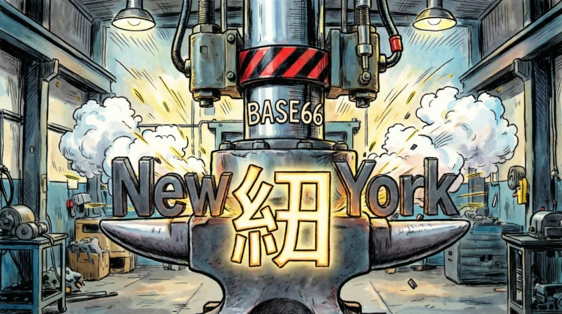

Base66: An Experiment in Universal Token Compression

Build a deterministic, LLM-agnostic compression pipeline to shrink English text into dense symbolic codes, reducing LLM token costs without neural models or state.
Scaled a 2.5-billion-row frequency dataset on a 32 GB RAM machine by using hash-partitioned bucket processing, streaming state machines, and ordered block-writes to prevent NVMe page thrashing.
Reached ~99.55% token parity. While it proved that deterministic dictionary compression alone yields marginal token savings against modern tokenizers, the engineering journey unlocked critical insights into hardware primitives, I/O bottlenecks, and token economics.
The idea traces back to “Domain-Specific Compression for Efficient Prompting” (arXiv, 2023–2024 era), which showed you can build micro-languages for specific fields — medicine, law, programming, finance — where dense jargon tokens get expanded into full meaning by the LLM. The term “high-density token compression” was used informally in talks for this. My twist was to be greedy about it: instead of a domain micro-language the model already knew, build a universal one and make it token-efficient for any English text.
I wanted that translation to be LLM-agnostic and deterministic — losslessly shrink English so it costs fewer LLM tokens for the machine to process, with the receiver needing only a shared dictionary, no model, no context, no shared state.
The metric was settled early: tokens, not bytes. A code that maps one phrase to one symbol saves LLM token count even when the symbol spans several UTF-8 bytes. The dictionary is the primary path; a neural fallback (T5/BART) is the safety net for phrasings no static dictionary can cover.
Role: System Architect, Performance Profiler & Lead Debugger
This project was built using AI-assisted implementation (“vibe coding”). I designed the underlying algorithms, set the memory constraints, and diagnosed hardware failure modes—leveraging AI to generate glue code while focusing my effort on memory alignment, DuckDB stream optimization, and I/O bottleneck analysis.
The dictionary is ranked from real frequency data — the Google Books Ngrams 2020 corpus. Ngrams are cleaned, unioned, scored, and cut into tiers; each code carries a mode-switch prefix so the decoder can tell code from literal text.
The whole scheme rests on one number per ngram, the score:
score = token_count × frequencytoken_count is how many LLM tokens (cl100k_base) the raw ngram costs, and frequency is its count in the corpus. Ranking by score promotes phrases that both appear often and cost many tokens to leave raw — those are the ones worth spending a code on.
A note on code cost: my first scoring formula subtracted the code’s own cost, but I dropped it, because it couldn’t be known until the encoder had already picked the phrase length — a chicken-and-egg: a phrase’s cost depends on which tier (1/2/3 chars) it finally lands in, which follows ranking, not precedes it. As the post-mortem later made plain, that simplification came with a real cost: by scoring the whole long tail on raw token_count × frequency alone, tier-3 ended up holding an enormous number of 2–3-token phrases that a 3-character code (with its mode-switch overhead) can never pay back. Eligibility filtered the extremes — token_count >= max(code_width, 2), so single-token words are excluded from every tier (a code can never beat the raw word’s single token) — but it did not, by itself, stop the tier-3 bloat of marginally-profitable phrases.
That score orders every ngram into one global list, and the list is then sliced into tiers — not by meaning, but by capacity. The code alphabet has roughly B = 5,062 usable symbols: it starts from 5,066 single-token visual characters mined from the tokenizer’s own vocabulary, minus four reserved for grammar (★ ☆ ● space). The project is named Base66 after that 5,066-character pool — the “66” is a vestige of the leading digits of 5,066, not a 66-symbol alphabet.
Those 5,066 characters weren’t hand-picked — they were mined from the tokenizer itself. I walked every byte sequence in the open vocabulary of tiktoken (the tokenizer behind GPT-4o and the cl100k_base encoding) and kept every single-codepoint, visually-representable token — everything the model treats as exactly one token on its own. That yields 5,066 characters. Then I tested every ordered pair of them and kept only the pairs that did not BPE-merge back into a single token, so a two-character code would never silently collapse into one.
The heavy CJK look isn’t a design choice — it’s arithmetic: Unicode is largely dominated by CJK, which makes up roughly 60–70% of all encoded characters. When you let the tokenizer’s own vocabulary pick the characters, the pool ends up mostly CJK by construction — I aimed for “every single-token visual character the tokenizer knows,” and the CJK dominance simply fell out of the numbers.
A fiddly detail I had to respect: the pool is built by taking the 5,066 chars in codepoint order and removing the four reserved grammar chars — but those four fall anywhere in that order, so the surviving characters are not contiguous. The pool has to be re-aligned to that discontinuity: each character’s pool index is its position in the filtered, re-numbered list (0…5,061), and the 13-bit indices stored in codes.bin address exactly that re-aligned pool. Keep the pool and the codes out of sync and a code silently lands on the wrong character — which is why pool.txt order and codes.bin must always come from the same export.
The three tiers are ranked score sections sized to fill exactly what that alphabet can express at increasing code widths:
| Tier | Mode prefix | Code width | Entries (top slice by score) |
|---|---|---|---|
| 1 | ★ |
1 char | the top 5,066 ngrams — up to B codes |
| 2 | ☆ |
2 chars | the next 25,664,356 — up to B² |
| 3 | ● |
3 chars | everything after — up to B³ (≈ 1.3 billion) |
So the highest-scoring phrases get the shortest one- and two-character codes, and the long tail of ~1.3 billion entries gets three-character codes. That is exactly why the alphabet’s size matters: B, B², B³ are the tier capacities, so the couple of thousand hottest phrases fit in width 1, tens of millions in width 2, and over a billion in width 3.
From there the tiers are compiled into a static dictionary. The ranked list is exported into three binary files — pool.bin (the concatenated key bytes), offsets.bin (the cumulative offsets delimiting each key), and codes.bin (the packed code assigned to each key) — and those three bins are fed to the MPHF builder. A minimal perfect hash maps every one of the ~1.35 billion keys to its own slot with zero collisions, and the slot is the rank, so producing a code is pure arithmetic: base-5062 digits of the slot. A fingerprint array per slot verifies that a candidate phrase is really in the dictionary rather than a lucky hash. The whole thing is read-only and memory-mapped, so every worker shares the same pages.
I also needed the reverse direction — turning a code back into the ngram it replaced — and at first I assumed it was pure arithmetic: that a code’s pool indices were base-B digits of its slot. That holds going forward (a rank is the code), but it’s false coming back for two of the three tiers. Tier-2 codes come from an ordered pool-pair file, not a base-B enumeration of all pairs, so a pair has no arithmetic link to its slot; tier-3 codes are stored by rank in groups permuted against base-B order. The first arithmetic decoder I wired up returned a decode miss for every single tier-3 code.
The fix was to drop the arithmetic shortcut and resolve codes the honest way: collect the codes that actually appear in the text, pack them, and scan the relevant tier block for their slots in memory-bounded chunks. The neat payoff — you never need a separate reverse lookup table. The same three bins already encode where every key lives: once you know a code’s slot, the ngram is simply the pool.bin[offsets[slot] : offsets[slot+1]] slice. Table-free decode that is correct, at the cost of a bounded scan instead of a clever formula.
Finally, the encoder runs on a test corpus using Viterbi — a dynamic program over the text that, at each position, picks the optimum between emitting a code or the literal characters. The critical subtlety is what cost the Viterbi path minimises, and that cost evolved in two versions. Version 1 minimised output character/byte length, which turned out to be a disaster for tokens (see “Why it didn’t work” below) — it shrank bytes while expanding tokens. Version 2 was rewritten to minimise LLM token count, supplemented by a token-aware correction pass that reverts any marginal, token-negative code chunk. The output is the .base66 stream, and the win is measured as 1 − (cl100k_tokens(encoded) / cl100k_tokens(original)) — a ratio that must stay under the gate, since the whole point is saving tokens, not bytes.
The test corpus I benchmark against is text8, the streamlined variation of enwiki8: the first 100 MB of cleaned Wikipedia text. It is the standard ingest used throughout the results above.
Writing that stream is governed by a small piece of design: a rule-based state machine. It walks the text character by character and, at each step, decides whether what it emits is raw literal text or a coded unit. The default state is raw (space is just the raw delimiter), but the moment it meets a ★, ☆, or ● it switches into that tier’s section and emits exactly one, two, or three pool characters as a single code — then returns to raw. The four reserved characters never appear as data, so there is never any ambiguity about which state you’re in. That determinism is what makes the whole scheme lossless in both directions: the same small grammar both produces the stream on encode and verifies it on decode, and it doubles as the classifier that tells you at a glance whether a stream was properly encoded or is leaking raw English.
Before I could test a single hypothesis, I had to actually get the data — and that was its own adventure. The obvious route was querying Google’s BigQuery tables, and that was the first lesson in costs: it’s pay-per-query on terabytes scanned, needs a billed GCP project, and Google’s own ETL pipeline quietly corrupted perfectly valid terms. Legitimate Unicode like 𝑓, 𝑤, 𝜕 came back as [U+FFFD] replacement characters, because their pipeline eliminated them. A frequency-based dictionary built on who-knows-what the model would tokenize couldn’t start from data that dropped real characters.
So I went around Google’s query service entirely. The same public corpus lives on Google Storage as raw .gz files, and downloading them directly is completely free — no API key, no billing, no quota — and higher fidelity, because it sees the raw terms BigQuery’s pipeline skipped. That was the decision that made the whole project affordable.
The cost moved from money to time and disk. Each ngram level is gigabytes of compressed data that has to come down, decompress, get filtered for POS tags, and aggregate across every year into clean parquet files — and a pipe cleaner than the official pipeline’s. I downloaded in parallel (a handful of HTTP workers), decompressed across a dozen cores, and aggregated through DuckDB spilling to disk as a parquet file. Disk itself became a constraint, so the pipeline ran in streaming fashion: never download everything, keep only a bounded number of .gz files on disk, and let a continuous loop replenish them as the decompressor consumed them. Every batch merged ten temp parquets into the cumulative store in a single transaction — about five times faster than doing it file-by-file, because all the fixed overhead (connection open, commit, table scan) got amortized.
Resilient by design: the cumulative store was the single source of truth. If a run died halfway, restarting skipped what was already merged, re-downloaded the partial files, and rolled back any interrupted batch — no data lost, no counts doubled. It took a long while to pull down gigabytes and gigabytes of ngrams, but it was a set-and-forget long while, and the result was a corpus I could trust: validated to 100% precision against the reference, down to the exact frequency of every term, with only the math-symbol encoding cases as deltas.
The download saga above reads like the clean, working version — landing there was the real fight, and this is the short version. Everything had to fit in 32 GB of RAM, and the naive approach didn’t come close.
First, memory. Aggregating frequencies the obvious way — one giant in-memory dictionary — blew past the budget at bigram scale: 134 million rows needed ~29 GB and crashed. The rule became never accumulate in Python: each worker wrote a small temp parquet, and DuckDB merged them with a memory limit and disk spill.
Second, speed — and the culprit surprised me. It wasn’t decompression or parsing; it was how rows entered the database. A per-batch executemany burned 93% of the runtime (roughly 6.5 hours for the bigram set), and feeding whole Arrow tables into a single insert made it 382× faster, collapsing the whole download to about half an hour.
Two red herrings cost time too: WSL’s 9P filesystem looked guilty but was only ~9% slower than ext4 on sequential reads (the real limiter was RAM, not disk), and recompressing to zstd was a dead end — the file came out larger and slower. Validation hit the same wall and got the same fix: DuckDB joins that stream instead of building Python sets.
The raw corpus also carried a lot of junk that had to be stripped before any of it could be ranked. Google’s ngrams annotate terms with part-of-speech “separation fields” — a verb, an adjective, a noun, word boundaries — and those tagged variants are noise for a dictionary of plain English phrases. The pipeline had to replicate what BigQuery’s has_tag = FALSE filter did — drop every POS-tagged term so only the clean, untagged phrase frequencies survive. Anything encoded with those separation markers had no place in a codebook.
The placeholder characters were a subtler fight. Google uses _ as a stand-in for out-of-vocabulary words and punctuation boundaries, and that OOV placeholder survives the first cleaning stage — it only gets removed later by rejecting entries that still contain it. The cleaning logic thus had to handle a graduated set of artifacts: strip POS suffixes, collapse underscore-separated word pairs into spaces, and reject a specific list of structural placeholders (start/end markers, punctuation stubs) so the final corpus is genuinely just language.
Was that cleaning ever fully solved? Not quite — residual _-formatted keys later turned out to be squatting in the top-ranked slots of the dictionary, crowding out real English (that’s the B1 cause in the leak diagnosis). But the cleaning pass itself, the part that mirrors Google’s official filter, was validated to match the reference output 100% on shared keys.
With all five levels downloaded, the next step was to merge them into one ranked list — and that hit a wall far sooner than I expected. The naive union did a single giant aggregation over roughly 2.5 billion rows, and DuckDB needed a hash table of about 90–140 GB to hold it. On a 32 GB box, that was never going to happen; it ran out of memory every time.
The fix was not to tune memory up, but to stop needing it. Instead of one giant hash table, I broke the work into buckets. First each ngram is normalized — put into a canonical form so the same phrase always looks identical (lower-cased, POS tags stripped, underscore-spaces turned into real spaces). Then every normalized ngram is hashed into one of 128 buckets, with the rule that identical phrases always hash to the same bucket no matter which ngram level they came from.
That rule is the whole trick: because a phrase never lands in two places, the process never has to hold all 2.5 billion rows at once. Each bucket is small enough to aggregate and sort in RAM on its own, and the final step is a cheap k-way merge of the already-sorted buckets — which, happily, also means the writes to disk come out in sorted order rather than scattered. Peak memory dropped from “impossible” to “one bucket,” and the rows finally flowed through.
The lookup layer was a journey that taught me about primitives. It began as a mutable key-value store holding the dictionary both directions, and encoding probed every phrase length at every position — hours of work for a modest corpus. An in-memory prefix trie didn’t fit in RAM: a billion multi-word phrases share almost no prefixes, and the long tail dominates node count. The lesson there was matching the tool to the shape of the problem — and once I moved to a minimal perfect hash over the billion keys, the lookup finally stopped being the pain.
But building that billion-key hash taught me a worse lesson — and the root of it was the disk itself. The whole project lives on /mnt/e inside WSL, which is an NTFS drive reached through a 9p filesystem mount. For large streaming reads that’s fine, but the moment work needs random writes, memory-mapped files, or ftruncate()-based temp files, that path collapses: 9p/NTFS just doesn’t behave the way heavy build code assumes. The stubborn answer that kept recurring was that serious stages had to run on a native ext4 volume — the ext4 that lives inside the WSL VHDX, or a separately mounted ext4 partition — where the filesystem semantics actually do what you’d expect.
The second lesson, and the one that actually explained the thrashing, is that NVMe is not really random access. It reads and writes in blocks, and random 4 KiB page writes scattered across a multi-gigabyte region are its worst case. If you are going to write a lot of data, what you really want is the write list to be sorted so the writes land in ordered, sequential blocks instead of hopping all over the address space.
My first fill pass did the naive thing: computed each key’s value and wrote it to its slot as it went, effectively in random order. The result was pathological — the process sat in uninterruptible I/O wait for hours at near-zero CPU while the kernel re-flushed the same dirty pages, until a terabyte of writes had been issued to produce a 25 GB file. (Thrashing, in other words, was partly caused by not sorting before writing.) It finally OOM-killed a full-scale run on the 32 GB box when the merge opened one reader per (thread, run) — hundreds of runs times twelve threads, roughly 45 GB of anonymous buffers.
The fix was to respect the block and order the writes. The fill now computes each (slot, code, fingerprint) in chunks, radix-sorts each chunk in RAM, writes the sorted runs to disk, and k-way-merges them straight into the output — so the final write pass is sequential and lands in ordered blocks. Byte-identical output, but a build that used to threaten to run for a day now just runs, and the memory is planned against one explicit budget so the merge can’t silently balloon again.
Around then I figured the cure for all this was simple: throw the build at a bigger, faster remote box. I stood up a cloud VM — the “oracle” — whose CPU was genuinely quicker per core than my local machine. This would be the answer: get the CPU-bound work off my desk and onto something with real cores.
The build promptly spent a day and a half stuck in uninterruptible I/O wait, more than 1.5× my own ~1 hour CPU estimate. The per-core speed was never the problem — the machine’s data path was. What I’d attached for storage looked, on paper, like an SSD (it was marketed as block storage), but it was actually a network-attached volume. Each little random write had to travel over the network instead of hitting local silicon, and the very thing that had thrashed my local machine — sustained random 4 KB page writes — was exactly what a network disk can’t do. The throughput that should have been the advantage turned out to be the bottleneck.
So the remote build was abandoned as a build target, and a hard rule came out of it that now comes first whenever I reach for another machine: the build must run on real, native non-network block storage, and the quickest check before believing a disk is “NVMe” is to confirm it isn’t a network-attached volume in disguise. The remote box taught me that a faster CPU can’t outrun a slow disk when the workload is write-shaped.
What genuinely didn’t work was the compression itself — and it was measured, not assumed. My baseline hypothesis assumed the top-tier codes cost roughly zero token overhead. Measured reality: compression expanded tokens — 126% on one experiment, 157% on another — with over 60% of the output still raw English. The frustrating part was that the scheme did exactly what a compressor should at the byte level: the byte-optimised runs cut the output to roughly 50% bitwise compression — we saved bytes but spent tokens. The causes were independent:
But the single biggest drop came from a grammar change, and it taught me where the real overhead was hiding. Early on, mode-1 was the coded default, and raw text was wrapped in an explicit ■…■ open/close — every run of literal characters paid a framing overhead just to exist. We had already excluded the single-token ngrams from the dictionary, but those words still had to be emitted as text, and because raw was a non-default, wrapped mode, they fell into it carrying that wrapper — so excluding them didn’t free them, it just made them raw with overhead.
The fix was to flip the default. We made raw mode the default instead of the coded mode: literal text needs no escape markers, space is simply the raw delimiter, and you only leave raw when you hit a ★/☆/● to enter a coded section. The single-token words we excluded stay raw, but now raw costs zero overhead. That single redesign — making the common case the free case instead of the bracketed one — is what drove the ratio down substantially, because it stopped paying a framing cost on the majority of ordinary words that would never be worth coding anyway.
The lookup-journey taught me to pick the right primitive, and the numbers made it decisive. A minimal perfect hash is far faster than RocksDB or marisa-trie for this job. RocksDB was a mutable store handling a prefix problem as a stream of point lookups — hours per corpus. marisa-trie couldn’t hold the dictionary at all: not only did the billion multi-word keys not fit in memory, but marisa-trie has a hard file-size cap — 4 GiB on 64-bit systems, 2 GiB on 32-bit — because its matching algorithm packs keys into a read-only in-memory space using fixed address offsets. Our key set is ~49 GB of keys spread over ~1.35 billion entries, orders of magnitude over that ceiling. The MPHF, by contrast, needs ~3 bits per key for the hash itself and turns “is this a phrase and what’s its code” into a hash + one array read + a fingerprint compare — nanoseconds, not milliseconds.
But the MPHF works well only if the keys are not rubbish. It does not degrade gracefully on junk: if the input contains literals that aren’t really language — the residual _-artifact keys, the POS-tag pollution squatting in the top slots — they occupy the scarce one-character code slots and crowd out the real English that should be there. That is why the source had to be sanitized before the dictionary was built: strip the tags, reject the structural artifacts, and only feed the MPHF clean, genuine language. Garbage in meant the precious short codes went to garbage phrases, and it showed up directly as raw English leaking out of the stream.
The rest of it was the same lesson in different clothes.
For parquet, use DuckDB, not pyarrow. It can issue real SQL calls that stream instead of materialising whole tables, which is what kept a 2.5-billion-row corpus workable inside 32 GB.
NVMe is not really random access. It works in blocks, so if you’re going to write a lot, sort first so the writes land in order — that turned a build that thrashed the disk all day into one that just ran.
Respect the currency — tokens, not bytes. Every code prefix costs its own token, so the encoder has to minimise tokens and only emit a code that genuinely saves them; 83% of the dictionary at 3–5 raw tokens is right on the margin where that math decides everything.
Base66 did not achieve a dramatic token compression win — modern BPE tokenizers are already heavily optimized. But building it, hitting the wall, and discovering exactly where the hardware and algorithmic limits stand is what engineering is all about.
enwiki8: the first 100 MB of cleaned Wikipedia text. https://mattmahoney.net/dc/textdata.html.gz files from Google Storage (not queried through BigQuery). Main listing: https://storage.googleapis.com/books/ngrams/books/datasetsv3.html — we used Version 20200217. https://storage.googleapis.com/books/ngrams/books/20200217/Looking to work on AI, systems, and applied research.